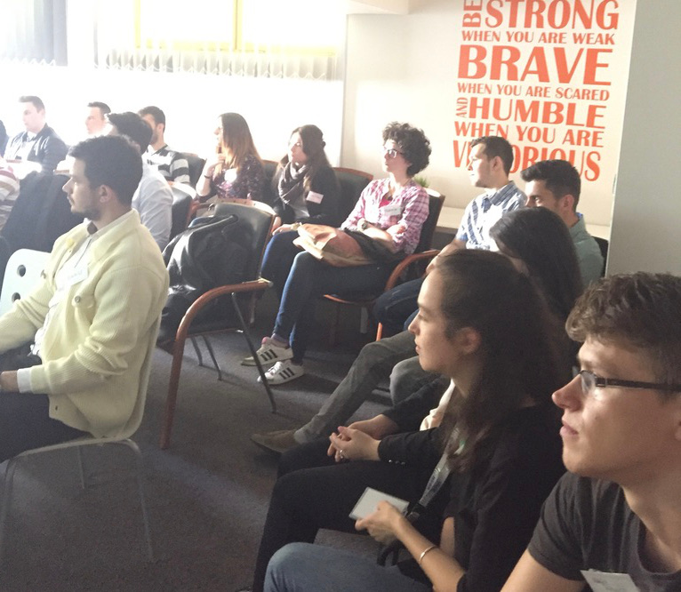

My deepest commitment is to create mobile apps that help people reach new levels of health, productivity, knowledge. I want everyone to have a better life that inspires them to create a better world.
I've studied Automatics and Computer Engineering in Iasi,(Romania) at the Technical University "Gh. Asachi". My passion at the time was Automatics and my specialty had topics like Robotics, Real-time Operating Systems, Measurements, Electronics, etc. But I also studied Algorithms and Data structures, databases, Java programming, lots of C++ and some Assembler. My final project was an embedded system communicating through the Telnet protocol via ethernet with a server. The applications of this project was in the field of IoT and Smart Home.
I also studied Business Management in the "Lucian Blaga" University of Sibiu where I got knowledge in Economics, Marketing, Management, Knowledge management, Logistics and so on. Have seen the other part of an IT business and it made me well aware of the whole picture. This makes me an unique kind of software developer that can really understand the client's needs.
I love the IoT since we were not calling it like that. I did a lot of home automation before it was cool and I've played a lot with Embedded Operating Systems. Then I got into Android and it ate all my time: Wearables, Phones, Tablets, TVs, cars.
I also like a lot of sports like football, skating, running, tennis, swimming. I love swimming so much I'll stop here to day dream about it. Splashhhh.
I've been working on Android Apps for 5 years now and I really love it. It have been 5 years of intense development, having a 8 hour job and extra projects. I always like to joke that I should add 50% to my years of experience for the extra projects that have thought me a lot.
Given the fact that Android is so wide spread I had the chance to work on different kids of Apps. The first Android code I've seen was in Eclipse and it was an eBook Reader (Polo). Now, I work with Android Studio and the cool tools that the AOSP team comes with, together with IntelliJ and the whole community. I've been in the embedded area of Android with Twinca and DentCall Touch but I've also worked on Apps that are on the Play store and downloaded by thoulsands, like Mobiloud or Skivision.
Parts of the framework and libraries that I've used are:
But the thing that I really love to do in Android and that I'm good at is Performance optimization. I think every Android Developer and most of the Android users know this: Android is not as smooth as iOS. This is not just because of the different architectures and the hardware of the devices but also because of the poor programming of the apps. I've seen and refactored lots of code that was really wasting important memory and CPU resources and made apps smooth.
Started exploring iOS a little before Swift language was made public by Apple. I am a big Apple fan and user but Obj-C was a little awkward for me in the beginning. I've started creating small projects to see how iOS works around 2013 but decided to wait for Swift to go live. In 2014 I started developing for iOS in Swift 1 but learned some ObjC because of all the documentation online. Now, am proud to say that I'm not a junior iOS developer anymore.
Using the latest tools form Apple and going through a couple of Udemy/Udacity course, I went through:
After that I've launched two small apps that are live on the App store and working on a redesign for one of them.
I didn't use to like RoR but it got my attention when I met Aryk Grosz (CTO at Mixbook) and he was amazed by the fact that we don't use RoR in Romania so much. I decided I should give it a try and I was amazed myself by the speed of development with Ruby. It seems like everything goes so smooth and the results are very fast visible. I settled to Ruby on Rails as my prefered backend technology to power my APIs. I already have two apps that connect to RoR backends I've coded and I'm working in close collaboration with RubyTribe Cluj to improve my skills.
As an early adopter of programming languages and frameworks I've started learning Angular2 on a project that needed an Administration Panel on the web. Knowing nothing about web development offered me the possibility to learn whatever I choose. I went for Angular2 even though I was close to learning React. I'm doing pretty well in Typescript and I can handle most parts of the Framework, using without problem the Router, Http client, Data Binding, etc. It seems lately that all the technologies converge in doing things in similar ways as I found Angular2 to use the Reactive approach and Dependency Injection and all the good stuff I found on other platforms.
The Nobia app for iOS is a retail App that is meant to help customers choose the right furniture and appliences without the need of a employee. It helps saving time and money for both the shop and the customers. From a technical point of view this is quite a simple app that doesn't require any special API but the AFNetworking library was used in it.
Java Swing project for managing the clients of a Thermal System insalling company. It does a great job for small companies in this area because of the functionalities tailored especialy for the field. It has user management, reminders, report generation and everything such a company needs. Was developed during the college years with a friend in the small comapany that still uses it. We have rewritten it twice since it was first used and we're always ready to improve it. First project is never forgotten.
Very simple App that I’ve created for Android Wear. The purpose of the App was to kill some time with the watch and discover some nice colours that I could have used in my other Apps. It basically lets the user start discovering covers by flinging the finger over the watch and stopping the colour rainbow with a touch. A double tap would add the colour to the local storage. On the phone, the user can edit the colour using sliders, name it and add it to a collection (like Profit Calculator Theme). The challenge of the App was to learn how Android Wear works and explore the communication between a watch and a phone.
The Plant Lover's dream app, Thristy plants for iOS is a great tool to take care of your plants. Take a picture of the plant and name it, then set reminders for wattering and alarms for fertilising. The app will make you the best plant owner in the neighbourhood.
Very simple App that would help me and other stock exchange traders determine what is the correct price a stock should be sold in order to obtain the desired profit. Basically it is a calculator with some specific Stock Exchange formulas. Designed to help myself, the App generated the first dollar sell that I am very proud of. No biggie here but I wanted to get used to the App store publishing process and services. Now it seems that I can actually have a profit out of the... Profit Calculator.
The App was the mobile (Android) client for the IMC Learning platform. The platform offers courses, quizzes, presentations, books, etc to its users that usually come from the corporate area. The mobile client connects to the backend server using RESTful services exposed by the server and synchronises data locally. On the device, you can enrol to courses, read materials, respond to questions and manage appointments. I’ve been part of the complete redesign of the Application and re-factored the synchronisation code. The hardest part of the job was to negotiate with the German designers to adapt their design to the specifics of the Android platform as they were trying to hammer iOS design into Android
The IMC Learning platform and clients are the product of the company I was working for and the only restrictions were the German stubbornness, time and heavy time consuming internal processes
This was the first Android App that I’ve worked for. The project was sponsored by the European Union as a research project that was meant to create a better learning experience using an Android eBook Reader. The App itself was a nicely looking eBook reader that was one of the first readers to read some of the formats (can’t really remember which was the rarest one but there was one that none of the popular apps could read). The part where I’ve joined the team was, again, implementing RESTful services to connect the reader with a backend that computed advices based on the reading data sent from the App. I’ve also implemented Push Notification services (GCM) to alert user when it was time to read again.
The first iOS project that I’ve worked on, started by myself in an attempt to learn Swift (1). The App is the mobile client of an Incident reporting platform for Mental Illness Institutions in Denmark and Norway. The App was really simple as it was just used to report incidents, it had 5 screens with different forms to collect information about the incident. The tricky part was to enforce conditions between different screens and create an intuitive user experience even though restrictions were caused by selections on previous screens (not something currently visible).
A native Android App that transforms a Wordpress blog (or site) into a native experience. The App is a configurable client for the Wordpress Plugin Mobiloud provides. The combination results in a native App that offers a better experience to the readers. The beauty for a developer’s point of view comes with connecting to the Wordpress plugin and synchronising articles so that the reading experience is also available offline. For me, the most challenging part was altering the articles’ HTML using Javascript injection as I did not really know Javascript before this project. Exploring the WebView in Android (and its bugs) got me burned out for some weeks.
It is an App that helps patients determine if a mole is dangerous or not, detecting skin cancer and other forms of melanom based on pictures of your skin. Project challenges:
This was the most challenging project yet. The story behind the App is that PDAs need to be replaced and the closes substitutes are Android tablets. The App does lots of automated things for Mink farmers around the world. It could be named a mink-farm management system. The core features of the App are automated feeding, medicine tracking, kits registration and feeding curves. From the developer’s point of view, the challenges were: real-time performance to control the feeding machine for automatic feeding; connection with a bluetooth scanner and synchronisation between multiple devices and platforms (pc, pda, android)
The App replaces a custom hardware with an Android App, as Android devices are now so cheap. The App's main functionality is calling nurses to the doctor in need. It uses WiFi connectivity and it is customizable with different ringtones, order of call answering and urgency colors. The App is in a closed system sold as a complete solution for Dental Clinics, unavailable to the public.
The system also has a Licensing server with the backend written in Ruby (on Rails) and the front-end using Angular2 and Materialize CSS. I've built the whole platform and the synchronization between the components. The License server has User-Access Policy and it is composed of an Admin area and a Dealer area. The core functionality is Device management that is meant to control the access of the Android App into the ecosystem.
I like to use my own tools when working because I love them and they are always "sharp". I use a Macbook Pro 15" from 2015 along with an iPhone, iPad Pro and a bunch of Android phones and tablets. I love my 23" display that I use everyday and I can always go crazy on a 49" TV to put things in order or see the big picture.
I usually start early after a good morning snack. I consider the breakefast the most important meal of the day and I love to finish it by drinking a great coffee. I end my work late in the evening but during the day I take a lot of breaks. My eyes and my back don't need to suffer because my passion is a office activity. The breaks are not negociable in any way.
My laptop is jammed with usefull software like Atom, Visual Studio Code, Xcode, Android Studio, pSequel, etc. I also use a lot of web services. You can work with me with different kind of tools:
Core principles
As a Simplon Trainer, I had a session of 3 workshops in which I've trained a group of non-technical persons create Android Apps. The goal of the workshop was to get them excited for a following bootcamp of 6 months. The participants really loved the app we created (can be found in my GitHub account) because it was about a viral YouTube movie at the moment.
Ba, Cristi is a YO! type of App meant to "call" the other person. We've got through creating Login, Register screens and a list of contacts that you can call. The app was wired with Firebase, Google Cloud Messanging and notifications to make it all work. We got to a MVP in the 3 sessions we had.
As part of the Wirtek Viking Team I was deeply involved with all the phases of organizing two internships internally. My role changed through the internships from evaluating the candidates to mentoring the Android students and training everyone on tools and good practices.
The Git Training was probably the most notable one because generated a lot of interest from a Wirtek team as well as for the students. The team was migrating at that point from SVN to Git and had a lot to learn about distributed version control systems. The training was a great success having everyone on track with Version Control with little struggle. First times are the hardest, right?
Leave your email down below and I will contact you as soon as possible. You can also find me on Twitter or Skype following the links on top of this page.
{kind=link}
{kind=link}
{kind=link}
{kind=link}